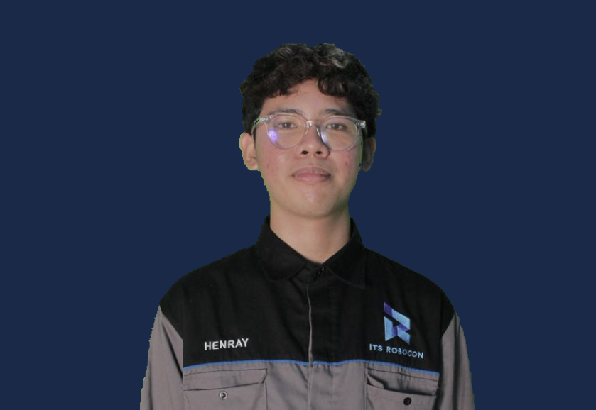

Institut Teknologi Sepuluh Nopember
B.Eng in Artificial Intelligence Engineering (RKA) · GPA: 3.60 / 4.00
Relevant Modules: Artificial Intelligence in Medicine, Medical Signal Processing (Acoustics & EEG), Medical Robotics, Robotics, and ROS2.

Engineer · AI & Robotics Research Engineer · Intelligent Systems Developer
I am an undergraduate student of Artificial Intelligence Engineering (RKA) at Institut Teknologi Sepuluh Nopember (ITS), Surabaya. With a strong background in hardware engineering, signal processing, and machine learning, I am passionate about designing intelligent systems with real-world impact — especially in the medical, environmental, and robotics sectors.
B.Eng in Artificial Intelligence Engineering (RKA) · GPA: 3.60 / 4.00
Relevant Modules: Artificial Intelligence in Medicine, Medical Signal Processing (Acoustics & EEG), Medical Robotics, Robotics, and ROS2.
High School Diploma, Natural Science · GPA: 91 / 100
3rd Place winner in the 2021 Regency-Level Science Olympiad (MITOS). Led academic teams in scientific presentations and mathematical problem-solving.
Lead IoT Engineer & Signal Processing Specialist
Principal Researcher
AI Researcher
Lead Developer
IoT Engineer
Researcher
A kiosk-based web application that leverages the WebRTC API in the browser to capture audio and video streams in real-time. The web acts as a lightweight client that routes massive computational loads to an AI server — powered by high-capacity local neural and graphics processing units — to perform language model inference and object detection.
Kiosk interface accessing camera & microphone via WebRTC API.
Audio/video transmission via WebSocket or WebRTC peer connection.
Language model inference and object detection using local GPU/NPU.
This architecture applies the principle of optimal client-server workload separation — the browser serves only as a data acquisition window, while all heavy computational loads are processed on the server side.
Programmer
Developing and optimizing control systems and motion planning for competitive robotics. Contributed to winning 1st Place and Best Strategy Award at the 2025 National KRAI.
Scientific Speaker — GERIGI ITS (Integrated Student Orientation), University Level, 2025
Technical Trainer — Programming Internship Program, ITS Robotics Team (Robocon), University Level, 2025